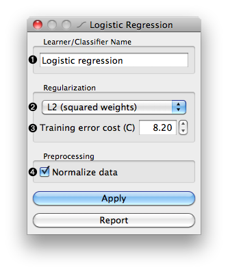

This is documentation for Orange 2.7. For the latest documentation, see Orange 3.
Logistic Regression Learner¶
Logistic Regression Learner
Signals¶
Inputs:
- Data
A table with training instances
Outputs:
- Learner
The logistic regression learning algorithm with settings as specified in the dialog.
- Logistic Regression Classifier
Trained classifier (a subtype of Classifier)
Signal Logistic Regression Classifier sends data only if the learning data (signal Data) is present.
Description¶
This widget provides a graphical interface to the logistic regression classifier.
As all widgets for classification, this widget provides a learner and classifier on the output. Learner is a learning algorithm with settings as specified by the user. It can be fed into widgets for testing learners, for instance Test Learners. Classifier is a logistic regression classifier (a subtype of a general classifier), built from the training examples on the input. If examples are not given, there is no classifier on the output.
- Learner can be given a name under which it will appear in, say, Test Learners. The default name is “Logistic regression”.
- Set the regularization type (L1 or L2 weight penalty).
- Set error cost paramter (higher cost means less regularization).
- Normalize the features before training.
Examples¶
The widget is used just as any other widget for inducing classifier. See, for instance, the example for the Naive Bayesian Learner.